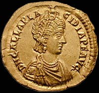
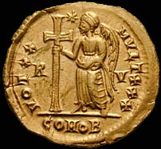
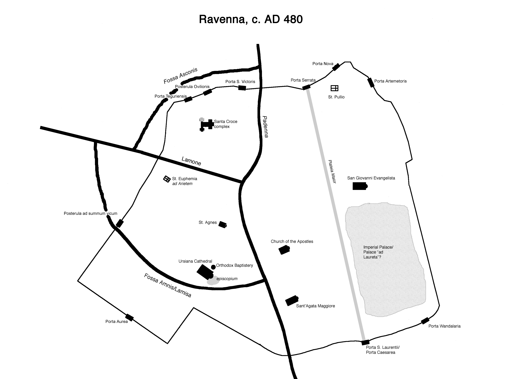
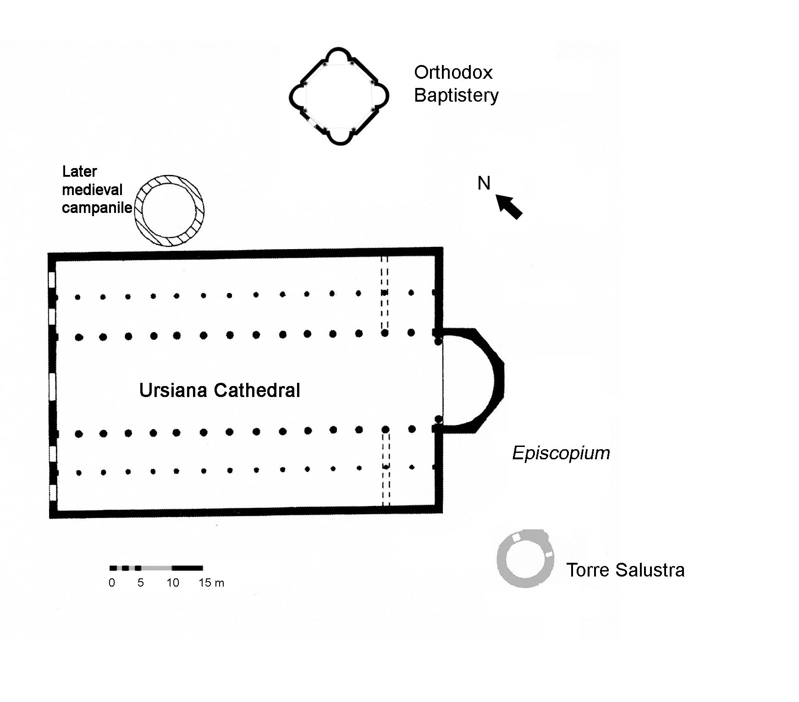
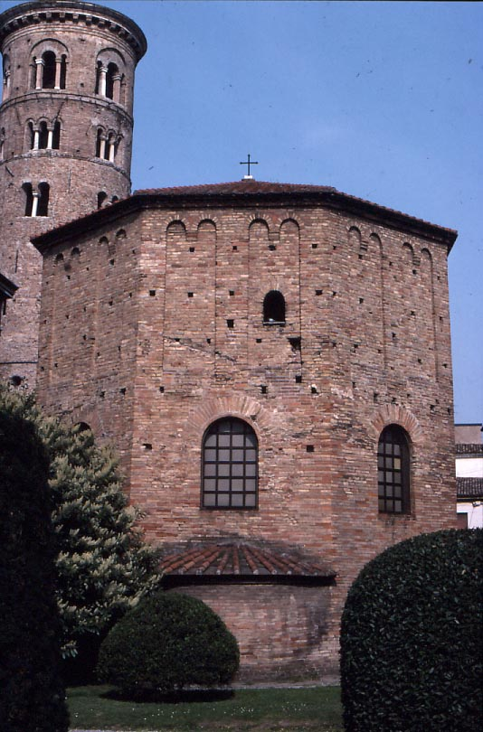
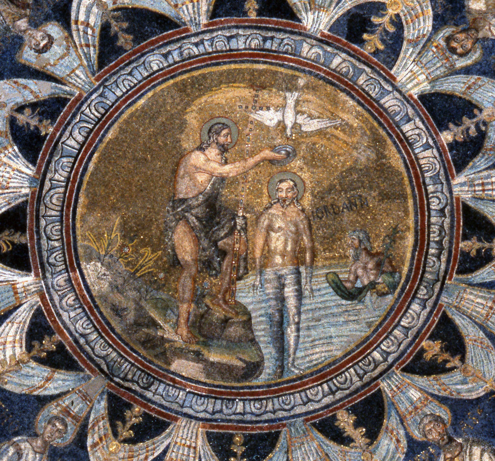
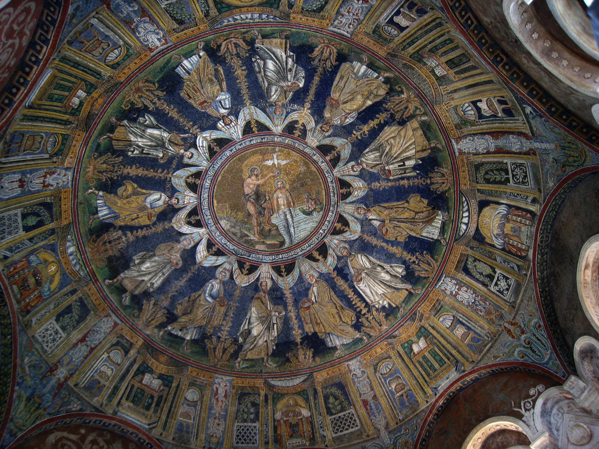
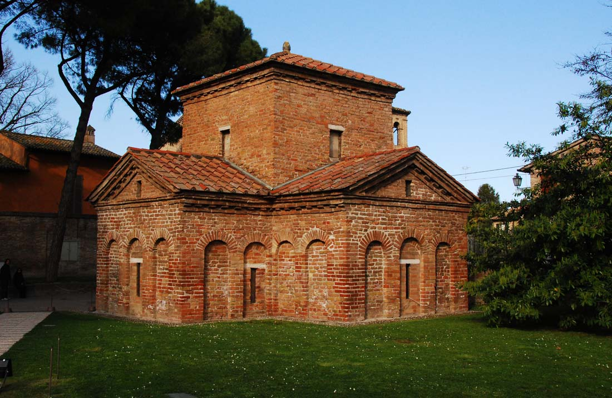
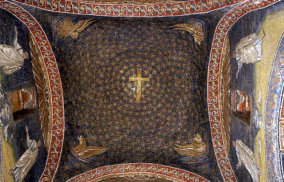
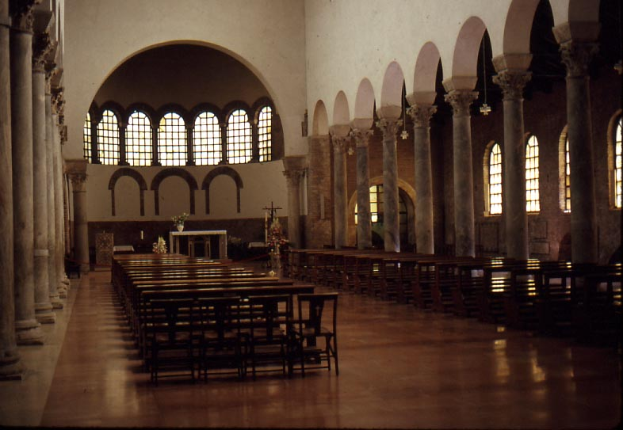

 
Coin of Galla Placidia (see
below), minted in Ravenna
Since 284, the rulers of the Western Roman empire had governed from the city of Milan in northern Italy. Located in a broad plain, Milan had no natural defenses; when the empire's borders began to crumble in the last years of the 4th century, the city seemed increasingly vulnerable.
In 402 the western emperor Honorius, age 15, and his military commander Stilicho, moved their residence, and the seat of imperial government, to Ravenna. The Visigoths, a Germanic group who had been serving as federate troops of the empire in the Balkans, had recently invaded Italy, threatening both Milan and Rome. Later authors suggest that Ravenna was chosen because of the defensive nature of its surrounding marshes, and its proximity with a port that could offer direct communication with the eastern capital of Constantinople was certainly also a factor in the choice.
|
It seems that there was nothing much in Ravenna in 402, but the emperor and the bishop of Ravenna immediately embarked upon a huge building project to create a worthy imperial city. The entire new city was surrounded by a new wall that formed a circuit 4.5 km long, enclosing an area of 166 hectares (by comparison, the old Roman walls had surrounded an area of 33 hectares). The walls stood 9 m high and were c. 2.2 m thick. |
 This map shows the walls (thin lines) and the
waterways (thick lines) |
|
 Ground plan of the cathedral; the basilica was demolished and rebuilt in the 16th century, but the baptistery still survives in its original form |
A huge new cathedral church, built as a basilica with two aisles, was constructed in the area of the original Roman town. To its north was an octagonal baptistery (known as the Orthodox Baptistery), a very up-to-date type of structure used for Christian baptism, on the model of similar buildings found in Milan and Rome. |
|
 |
Left: The Orthodox Baptistery, exterior view (with the 10th-century bell-tower in the background) Below: view of the mosaics of the dome of the Baptistery, and close-up of the central medallion, with a depiction of Christ being baptized by John the Baptist (the little figure on the right represents the River Jordan). |
|
 |
 |
To the west of that area, a palace was begun, perhaps on the grounds of an earlier governor's residence. Buildings to house members of the administration, which scholars estimate may have included at least 1500 people (not including military personnel), as well as courtiers, sprang up. A mint was established in the city, and began to mint gold and silver coins. None of these buildings have survived.
Ravenna's development received a dramatic boost thanks to one of the most fascinating people of the Middle Ages. Galla Placidia (see coin portrait, above) was the daughter, sister, wife, and mother of Roman emperors, as follows:
Theodosius I
(r. 378-395)
_______________|_______________
|
|
|
Arcadius
Honorius Galla
Placidia = Constantius
(r. 395-408) (r.
395-423)
| (r. 421)
|
|
Theodosius
II
Valentinian III
(r.
408-450)
(r. 423-455)
Galla grew up in Rome, in the household of Stilicho and his wife Serena, who was Galla's cousin. Stilicho, however, was murdered in 408, and Serena was executed (apparently with Galla's approval). But in 410 the Visigoths sacked Rome, and Galla was carried off as a valuable hostage. Eventually Honorius negotiated a treaty with the Visigoths, by which Galla was married to the Visigothic leader Athaulph in 414. She went with him into Spain, where she bore him a son who was given the hopeful name Theodosius, but the child died shortly afterward. Athaulph was assassinated in 416 and Galla returned to the court of Honorius in Italy, where she was married (against her will, one source says) to the Roman general Constantius in 417. She bore him two children: Iusta Grata Honoria (b. 417 or 418) and Valentinian (b. 419). Constantius was made co-emperor with Honorius in 421, and Galla was named empress. However, Constantius died the same year, and Galla quarrelled with Honorius; she fled with her children to her nephew Theodosius II in Constantinople. Honorius died, childless, in 423, and Galla came back, with an army provided by Theodosius, to place Valentinian on the western throne. From 425 to 437, she ruled as regent for her young son.
|
 |
Galla was famous for her religious devotion, and was closely allied with one of Ravenna's greatest bishops, Peter I Chrysologus (r. 431-450). She supported the elevation of the bishopric to second place in the Italian church hierarchy (after the pope). She is credited with building two major churches in Ravenna's walls. One was dedicated to the Holy Cross (Santa Croce): the church itself survives only in fragments, but a small chapel originally attached to its entrance porch, magnificently decorated in mosaic, provides a taste of what the entire magnificent complex must have been like. Known as the "mausoleum of Galla Placidia," since the 13th century it has been thought to have been her burial place, but actually she was buried in Rome. Left: exterior view of the "mausoleum of Galla Placidia". Below left, interior view facing south; below right, view into the vault. |
|
|
 |
|
 |
Galla's other church was a basilica dedicated to St. John the Evangelist (San Giovanni Evangelista). According to the original inscription (all the decoration is now lost), when she was travelling back to Italy there was a storm at sea; Galla vowed that if her ship was spared, she would built a church to St. John. This church's decoration is now lost, but originally it had an elaborate mosaic depicting Christ, and also containing portraits of all of the Christian Roman emperors down to Galla's generation. It thus visually represented imperial power in the city. Left: view of San Giovanni Evangelista; the church was hit by an allied bomb during World War II (it is very near the train station), and what we see today is largely reconstructed. |

After 437, Valentinian III took the reins of government for himself, and Galla fades from view; she died in 450. The fortunes of the empire took a dramatic turn for the worse with the appearance on the scene of the Huns under their leader Attila. They invaded Gaul in 451 and were fought off by a combined army of Romans and Visigoths, led by the Roman general Aetius. In 452 the Huns invaded Italy; they withdrew without causing damage in Ravenna or Rome, and Attila died the following year, but Valentinian apparently decided that he no longer needed Aetius and murdered the general in 454; Valentinian was assassinated in Rome in 455.
From 455 to 476, there was barely a Roman empire; various people held the title of emperor, but ruled only in parts of Italy, only sometimes including Ravenna. Finally in 476, a general of Germanic origin named Odoacer deposed the last man to hold the imperial title, Romulus Augustulus, and sent the imperial regalia to Constantinople. Odoacer ruled as King of Italy, based in Ravenna, from 476 to 489; we know almost nothing about his reign, and he does not seem to have had much impact in Ravenna.